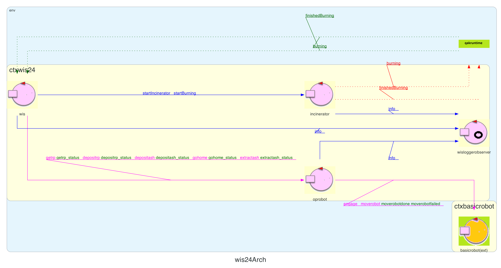
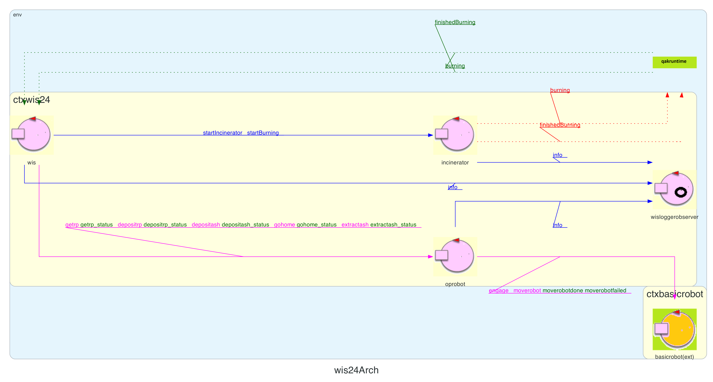

TEMA FINALE 2024 SPRINT1
Introduction
Questo documento contiene lo sprint1 del progetto per il tema finale
del corso.
Requisiti
I requisiti del sistema da creare possono essere trovati in
TemaFinale24.
Analisi dei requisiti
Per l'analisi dei requisiti si faccia riferimento allo Sprint0
realizzato precedentemente.
Modello del sistema
Il modello del sistema per lo sprint1 è raffigurato
nell'immagine sottostante.
 L'obiettivo dello sprint1 è quello di implementare il movimento dell'OpRobot nella Service Area, assicurandosi che raggiunga tutte le posizioni descritte nelle UserStory nello Sprint0, nell'ordine corretto.
Di seguito si riportano i principali attori del sistema, le interazioni tra di essi ed anche le motivazioni che hanno portato a modellare il sistema in questo modo.
 L'obiettivo dello sprint1 è quello di implementare il movimento dell'OpRobot nella Service Area, assicurandosi che raggiunga tutte le posizioni descritte nelle UserStory nello Sprint0, nell'ordine corretto.
{kind=link}
Di seguito si riportano i principali attori del sistema, le interazioni tra di essi ed anche le motivazioni che hanno portato a modellare il sistema in questo modo.
Messaggi scambiati
Si noti che la formalizzazione degli eventi come (Dispatch, Request, Event) potrebbe cambiare negli Sprint successivi. Questa possibilità è facilitata dall'uso dei QAK forniti dalla software house.
Messaggi inseriti nello Sprint0 (si faccia riferimento allo User Doc dello Sprint0 per ulteriori dettagli):-
Dispatch startIncinerator : startIncinerator(BTIME)
É stato modificato rispetto allo Sprint0. Verrà utilizzato per la configurazione dell'Incinerator negli sviluppi futuri. -
Event burning : burning(START_TIME)
-
Event finishedBurning : finishedBurning(TIME_ELAPSED)
-
Dispatch ashMeasurement : ashMeasurement(L)
(Si veda la pagina QakActors24 per ulteriori dettagli)
-
Request engage : engage(OWNER,STEPTIME)
-
Reply engagedone : engagedone(ARG)
-
Reply engagerefused : engagerefused(ARG)
-
Request moverobot : moverobot(TARGETX, TARGETY)
-
Reply moverobotdone : moverobotok(ARG) for moverobot
-
Reply moverobotfailed : moverobotfailed(PLANDONE, PLANTODO) for moverobot
-
Dispatch startBurning : startBurning(BTIME)
Questo messaggio è ricavato dal seguente requisito:" The Incinerator is able to perceive a proper activation command sent by using a wireless (wifi, bluetooth) connection.È quindi fondamentale per il sistema in quanto indica all'inceneritore che è stato inserito un RP e può iniziare la fase di incenerimento. Il tempo di incenerimento è rappresentato dal parametro BTIME.
The Incinerator can process one RP at the time. The burning process requires (approximately) BTIME seconds."
-
Request getrp : getrp(TARGETX, TARGETY)
Reply getrp_status : getrp_status(0) for getrp
"2. if the WasteStorage container is not empty, the AshStorage container is not full, and the Incinerator is not in a burning phase, move to the WASTEIN port. If one of the conditions is not true, wait at HOME, until it becomes true.I parametri TARGETX e TARGETY contengono le coordinate in cui il robot dovrà dirigersi per svolgere il compito assegnatogli.
3. get a RP from the WasteStorage container;" -
Request depositrp : depositrp(TARGETX, TARGETY)
Reply depositrp_status : depositrp_status(0) for depositrp
"4. move to the BURNIN port and deposit the RP into the Incinerator;" -
Request extractash : extractash(TARGETX, TARGETY)
Reply extractash_status : extractash_status(0) for extractash
"6. move to the BURNOUT port to extract the ash, when the Incinerator has completed a burning phase;" -
Request depositash : depositash(TARGETX, TARGETY)
Reply depositash_status : depositash_status(0) for depositash
"7. move to the ASHOUT port and deposit the ash into the AshStorage container;" -
Request gohome : gohome(TARGETX, TARGETY)
Reply gohome_status : gohome_status(0) for gohome
"8. reconsider the point 2 (and go back to HOME, if it is the case)."
Le interazioni tra il WIS e l'OpRobot verranno gestite attraverso un'interazione di tipo Request/Reply in quanto la risposta dell'OpRobot potrà essere usata per la gestione della ServiceStatusGUI, che dovrà riportare lo stato del robot:
" 4. the state of the OpRobot, i.e. an indication of its
current location in the service area and of the job that it is
doing.
Contesti
Il linguaggio Qak prevede la definizione di almeno un contesto,
secondo la sintassi riportata sempre nella pagina
QakActors24.
Ai fini del funzionamento del nostro sistema, si formalizzano 3 contesti:
Ai fini del funzionamento del nostro sistema, si formalizzano 3 contesti:
- ctxwis24: contesto principale dell'applicazione
- ctxbasicrobot: il contesto esterno per la comunicazione con il supporto software fornito
- ctxmonitoringdevice: il contesto esterno in esecuzione sul RaspberryPi
Context ctxwis24 ip [host="localhost" port=8121]
Context ctxbasicrobot ip [host="127.0.0.1" port=8020]
Context ctxmonitoringdevice ip [host="127.0.0.1" port=8122]
WIS
Il WIS è modellato come attore (wis.qak).
Il suo compito in questa fase è quello di mantenere lo stato
attuale dell'inceneritore (acceso o
spento) e il
livello della cenere.
Per questo motivo il WIS interagirà con
gli attori Incinerator e
MonitoringDevice che saranno descritti
nelle sezioni immediatamente successive.
In particolare il WIS:
In particolare il WIS:
-
invierà il messaggio
startIncineratorall'Incinerator per dare il via alla configurazione dell'inceneritore. -
invierà il messaggio
startBurningall'Incinerator per dare il via all'incenerimento dell'RP appena inserito. -
riceverà il messaggio
burningdall'Incinerator per mantenere aggiornato il proprio stato interno. -
riceverà il messaggio
finishedBurningdall'Incinerator per mantenere aggiornato il proprio stato interno. -
riceverà il messaggio
ashMeasurementdal MonitoringDevice per mantenere aggiornato il livello delle ceneri. -
invierà il messaggio
getrpall'OpRobot per chiedergli di recarsi nella WASTEIN port per ritirare un RP. -
riceverà il messaggio
getrp_statusdal OpRobot per mantenere aggiornato lo stato dell'OpRobot. -
invierà il messaggio
depositrpall'OpRobot per chiedergli di recarsi nella BURNIN port e depositare un RP. -
riceverà il messaggio
depositrp_statusdal OpRobot per mantenere aggiornato lo stato dell'OpRobot. -
invierà il messaggio
extractashall'OpRobot per chiedergli di recarsi nella BURNOUT port e ritirare le ceneri appena prodotte. -
riceverà il messaggio
extractash_statusdal OpRobot per mantenere aggiornato lo stato dell'OpRobot. -
invierà il messaggio
depositashall'OpRobot per chiedergli di recarsi nella ASHIN port e ritirare le ceneri appena prodotte. -
riceverà il messaggio
depositash_statusdal OpRobot per mantenere aggiornato lo stato dell'OpRobot. -
invierà il messaggio
gohomeall'OpRobot per chiedergli di recarsi nella HOME. -
riceverà il messaggio
gohome_statusdal OpRobot per mantenere aggiornato lo stato dell'OpRobot.
Incinerator
L'incinerator sarà modellato come attore.
Interagirà con il WIS per ricevere il
comando
startIncinerator e
startBurning di inizio incenerimento ed emetterà
gli eventi burning e
finishedBurning.
MonitoringDevice
Il MonitoringDevice è collocato in un
contesto esterno rispetto a quello degli altri attori attualmente
modellati nello sprint0, il suo compito in questa fase è quello di
simulare la misurazione e l'invio del livello della cenere dall'AshStorage
al sistema inviando il messaggio
In futuro verrà modellato in dettaglio per essere eseguito su un supporto esterno, come il RaspberryPi.
ashMeasurement al
WIS. In futuro verrà modellato in dettaglio per essere eseguito su un supporto esterno, come il RaspberryPi.
OpRobot
L'OpRobot sarà modellato come attore.
Interagirà con il WIS per ricevere i comandi
getrp, depositrp, extractash,
depositash e gohome e
risponderà con getrp_status, depositrp_status,
extractash_status, depositash_status e
gohome_status, i cui funzionamenti sono stati esplicitati nei paragrafi
precedenti.
Piani di testing
Essendo lo Sprint1 concentrato nel modellare il movimento dell'OpRobot
e la sua interazione con il WIS, i test
saranno focalizzati su queste due parti del sistema.
I test fanno uso di un observer e di un POJO "Logger" per salvare i log rilevanti durante l'esecuzione in un file testuale.
Le classi di test, avviano l'intero sistema "wis_test.qak", pre-configurato per eseguire un ciclo completo "avvio-getrp-incerimento-estrazione_cenere-scarico_cenere" e verificano il contenuto del file di log generato.
Logger.kt
I test fanno uso di un observer e di un POJO "Logger" per salvare i log rilevanti durante l'esecuzione in un file testuale.
Le classi di test, avviano l'intero sistema "wis_test.qak", pre-configurato per eseguire un ciclo completo "avvio-getrp-incerimento-estrazione_cenere-scarico_cenere" e verificano il contenuto del file di log generato.
Logger.kt
-
testGetRP verifica il corretto recupero del RP dopo aver
verificato i requisiti menzionati nello User Stories e lo
spostamento verso la BURNIN port in cui
verrà depositato il RP.
testGetRP.kt -
testGetAsh verifica il corretto recupero dalla
BURNOUT
port dell'Ash prodotta dall'Incinerator
alla fine della sua fase di burning. L'OpRobot
dovrà successivamente dirigersi verso la
ASHOUT port dell'AshStorage dove depositerà
la cenere.
testGetAsh.kt
Prossimi sviluppi
Nel prossimo sprint (Sprint 2) verranno implementati l'estrazione e il deposito di RP e Ash.
Inoltre si gestirà il MonitoringDevice.
Footer
Membri del gruppo
- Corsetti Luca - luca.corsetti3@studio.unibo.it
- de Respinis Valentina valentina.derespinis@studio.unibo.it
- Sindaco Daniele daniele.sindaco@studio.unibo.it